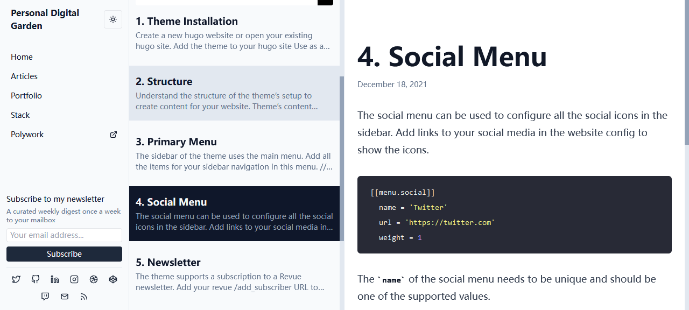

做一个 HTML 图像#
什么是 “HTML 图像”#
这里提到的所谓 “HTML 图像” 是指仅存有 SVG 元素所构成的图像元素的 html 文件，以下面的代码为例：
<svg class="h-4 w-4" viewBox="0 0 24 24" fill="none" stroke="currentColor" stroke-width="2"
stroke-linecap="round" stroke-linejoin="round">
<path d="M16 8a6 6 0 0 1 6 6v7h-4v-7a2 2 0 0 0-2-2 2 2 0 0 0-2 2v7h-4v-7a6 6 0 0 1 6-6z" />
<rect x="2" y="9" width="4" height="12" />
<circle cx="4" cy="4" r="2" />
</svg>
将上述代码输入文本文档中并保存为 html 格式文件，在浏览器中打开，可以看到领英的图标，可以注意到代码中的 svg 元素，如果 html 中只有这样图像相关的元素，那么 html 文件就可以当作一个图像文件使用，可以在静态网页中作为图标元素使用。
应用#
举个例子，请看这个 Hugo 静态网页主题示例页面： Personal Digital Garden

左下角 Social Menu 处的图标就是引用于一个个 html 文件，详细情况可以在 源码仓库 中看到。
尝试这个主题的过程中我想要用其他 icon 替换掉默认的 icon ，比方说用 Mastodon 或 Pleroma 的图标代替 Twitter 。搜索 “mastodon svg” 可以在 Mastodon · Bootstrap Icons 下载它的 svg 文件并使用对应的 html 中的 svg 元素，由此得到的 html 文件可以直接在上面的页面中使用。但是我找不到现成的 Pleroma 图标 svg 要素，要怎么办呢？
将 svg 图像转换为 html 中的元素#
首先先看看能不能找到一个 svg 图像，这样的图标一般都可以在官方网站找到。在 Pleroma — a lightweight fediverse server 上方直接下载 pleroma_logo_vector_nobg_nopan.svg 文件，在浏览器打开是这个样子：
在编辑器里打开文件能看到一长串代码，看着比上面的领英图标文件复杂很多。直接把它的格式换为 html 尝试使用，会发现不太对：
将转换后的 html 图像文件编辑为想要的格式#
要想自定义该文件，得知道里面一些基础的元素代表什么含义，我主要参考了这两个说明页面：
这里我的目标有三个：
- 去除非图像元素
- 去除图标颜色
- 修改图标在页面上显示的大小
一个个来尝试。
去除非图像元素#
这一步非常简单，将 <svg> 属性外的全部要素去掉即可，也就是去除这一部分：
<?xml version="1.0" encoding="UTF-8" standalone="no"?>
<!-- Created with Inkscape (http://www.inkscape.org/) -->
去除图标颜色#
Basic coloring can be done by setting two attributes on the node:
fillandstroke. Usingfillsets the color inside the object andstrokesets the color of the line drawn around the object.
在 pleroma 的 html 文件下找到每一个 <fill> 属性，比如 fill:#fba457;，将其全部删除。
补充： 后发现换到暗黑模式后图标不像其他默认图标一样反色显示，模仿 Mastodon html 文件添加 fill="currentColor" 后达到目标效果。
currentColoris a CSS variable that contains the computed value of the closestcolorproperty being used on an element. In short, the value ofcurrentColor= value of the closetcolorproperty.
修改图标在页面上显示的大小#
<svg>的width属性和height属性，指定了 SVG 图像在 HTML 元素中所占据的宽度和高度。除了相对单位，也可以采用绝对单位（单位：像素）。如果不指定这两个属性，SVG 图像默认大小是 300 像素（宽） x 150 像素（高）。
如果只想展示 SVG 图像的一部分，就要指定viewBox属性。
一开始我将 width 属性和 height 属性全部删除了，看到图标占据了整个页面并处于页面中心，但是大小仍然不显示为我想要的效果。最后各种尝试下，我发现只要定义 class 属性与默认图标中的 class 属性一致，就可以让图标大小显示正常。
最终效果#
在拼合怪图标中使用反色#
做了一个图标为何不再继续做一个？比如 Element ，其 svg 原始代码如下：
<svg width="200" height="200" viewBox="0 0 200 200" fill="none" xmlns="http://www.w3.org/2000/svg">
<path fill-rule="evenodd" clip-rule="evenodd" d="M100 200C155.228 200 200 155.228 200 100C200 44.7715 155.228 0 100 0C44.7715 0 0 44.7715 0 100C0 155.228 44.7715 200 100 200Z" fill="#0DBD8B"/>
<path fill-rule="evenodd" clip-rule="evenodd" d="M81.7169 46.5946C81.7169 42.5581 84.9959 39.2859 89.0408 39.2859C116.456 39.2859 138.681 61.4642 138.681 88.8225C138.681 92.859 135.401 96.1312 131.357 96.1312C127.312 96.1312 124.033 92.859 124.033 88.8225C124.033 69.5372 108.366 53.9033 89.0408 53.9033C84.9959 53.9033 81.7169 50.6311 81.7169 46.5946Z" fill="white"/>
<path fill-rule="evenodd" clip-rule="evenodd" d="M153.39 81.5137C157.435 81.5137 160.714 84.7859 160.714 88.8224C160.714 116.181 138.49 138.359 111.075 138.359C107.03 138.359 103.751 135.087 103.751 131.05C103.751 127.014 107.03 123.742 111.075 123.742C130.4 123.742 146.066 108.108 146.066 88.8224C146.066 84.7859 149.345 81.5137 153.39 81.5137Z" fill="white"/>
<path fill-rule="evenodd" clip-rule="evenodd" d="M118.398 153.405C118.398 157.442 115.119 160.714 111.074 160.714C83.6592 160.714 61.4347 138.536 61.4347 111.177C61.4347 107.141 64.7138 103.869 68.7587 103.869C72.8035 103.869 76.0826 107.141 76.0826 111.177C76.0826 130.463 91.7489 146.097 111.074 146.097C115.119 146.097 118.398 149.369 118.398 153.405Z" fill="white"/>
<path fill-rule="evenodd" clip-rule="evenodd" d="M46.6097 118.486C42.5648 118.486 39.2858 115.214 39.2858 111.178C39.2858 83.8193 61.5102 61.6409 88.9255 61.6409C92.9704 61.6409 96.2494 64.9132 96.2494 68.9497C96.2494 72.9862 92.9704 76.2584 88.9255 76.2584C69.6 76.2584 53.9337 91.8922 53.9337 111.178C53.9337 115.214 50.6546 118.486 46.6097 118.486Z" fill="white"/>
</svg>
能看出 <path fill-rule="evenodd" clip-rule="evenodd" d="M100 200C155.228 200 200 155.228 200 100C200 44.7715 155.228 0 100 0C44.7715 0 0 44.7715 0 100C0 155.228 44.7715 200 100 200Z" fill="#0DBD8B"/> 这组属性代表的是图标中的圆形，将 fill="#0DBD8B" 替换为 fill="currentColor" 。
但是另外四组代表圆形内的图形的属性要怎么调整呢？也替换为 fill="currentColor" 是不行的，这样图标就会只剩下一个圆形。于是自然会想到将它的颜色进行反转（invert）。
内联样式的 CSS 颜色反转格式如下：
style="fill:currentColor;filter:invert(100%)"
转换为 html 为：
fill="currentColor" filter= "invert(100%)"
以第一列圆形内图案属性组为例，其代码为：
<path fill-rule="evenodd" clip-rule="evenodd" d="M81.7169 46.5946C81.7169 42.5581 84.9959 39.2859 89.0408 39.2859C116.456 39.2859 138.681 61.4642 138.681 88.8225C138.681 92.859 135.401 96.1312 131.357 96.1312C127.312 96.1312 124.033 92.859 124.033 88.8225C124.033 69.5372 108.366 53.9033 89.0408 53.9033C84.9959 53.9033 81.7169 50.6311 81.7169 46.5946Z" fill="currentColor" filter= "invert(100%)"/>
这样一来无论正常浏览页面还是切换到黑夜模式图标都可以完美显示。
另外，只有矢量图才能转换颜色，png 等像素图像只能使用原有的颜色，但可以使用 Adobe Illustrator 等工具将像素图转换为矢量图。
参考链接：
1. SVG 图像入门教程 - 阮一峰的网络日志
2. SVG 参考手册 | 菜鸟教程
3. Color for SVG icons and elements with currentColor
4. Fills and Strokes - SVG: Scalable Vector Graphics | MDN
5. How can I invert color using CSS? - Stack Overflow
6. HTML嵌入CSS样式（四种方法）
7. 如何在Illustrator中将像素图转化为矢量图？ | 卡米雷特的小站